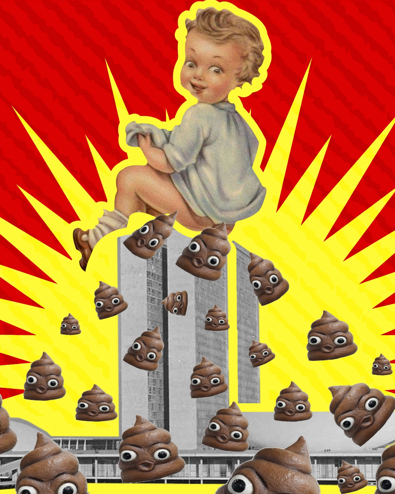
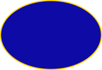
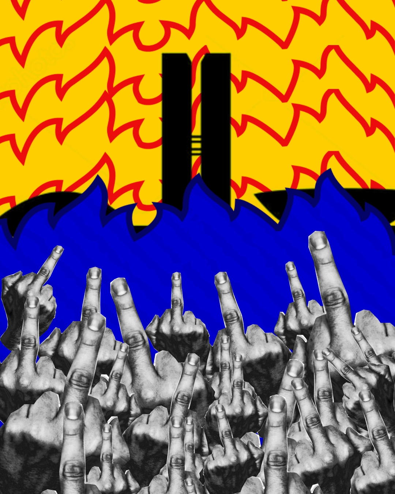
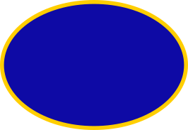
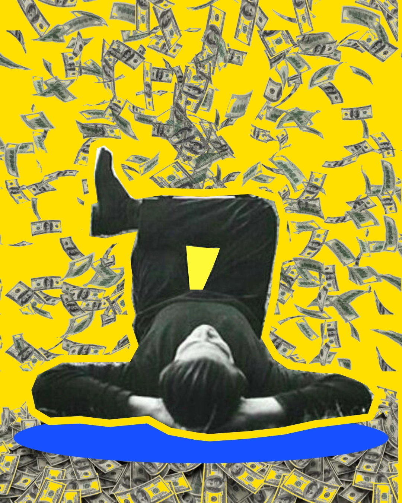
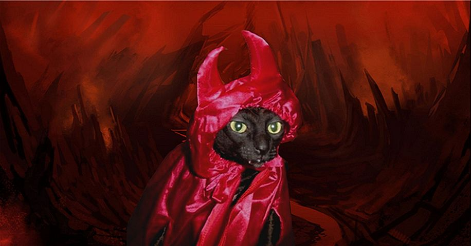
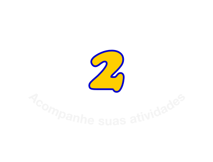
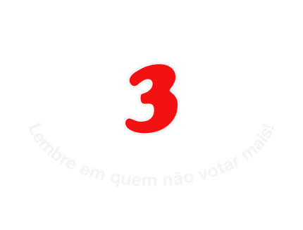

Salve, colecione, e lembre
em quem não votar mais!
NÃO PERCA O LANÇAMENTO!
Entre na nossa lista de espera e tenha acesso antecipado.

Pesquise qualquer parlamentar do Brasil. Deputado Federal ou Senador, do seu estado ou de qualquer outro.
Votações, faltas, patrimônio, processos.... Usamos dados públicos oficiais numa linguagem que você entende.
QUERO TESTAR

Nepobabies
Parlamentares que são
de famílias políticas


Inimigos dos
Trabalhadores
Quem votou contra o fim da 6x1

Podres
de Ricos
Os mais ricos no
Congresso Nacional
Não sabe por onde começar? Dá uma olhadinha nas nossas coleções.
QUERO TESTAR
Compare seus políticos
Compare seus parlamentares favoritos e mais odiados, salve o duelo e compartilhe!
QUERO TESTAREsse projeto
é resposta
à raiva de
trabalhadores.
Traduzimos dados públicos abertos de uma forma que o trabalhador entenda e possa usar para tomar decisões informadas com seu voto.


NÃO PERCA O LANÇAMENTO!
Entre na nossa lista de espera e tenha acesso antecipado.